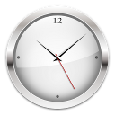
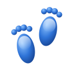

Мой ник
-
О себе Пара строк о себе: как зовут, сколько лет, чем занимаешься. Подробности можно посмотреть справа.
Тут можно объяснить, откуда взялся ник.
- Занятие
- Чем занимаешься
- Изучаю
- Что сейчас изучаешь
- Слушаю
- Любимые жанры
- Работа
- YouTube канал

Ютуб видосы
-

Загружаю видео…
Мои Фотки
Скейт видосы
Игры
Проекты
Линки
Об этом сайте
- Сайт был создан от вдохновения с Frutiger Aero y2k и скевоморфизма

Визиты сайта: … Видео аквариумаНарисовано кодом, пока нет своего ролика
Видео аквариумаНарисовано кодом, пока нет своего ролика- Иконки разделовOxygen (KDE) · LGPL-3.0-or-later
- Логотипы и иконкиCrystal, Noto Emoji, Simple Icons, Wikimedia Commons, aMSN
- Шрифт M PLUS 1pM+ Fonts Project · SIL OFL